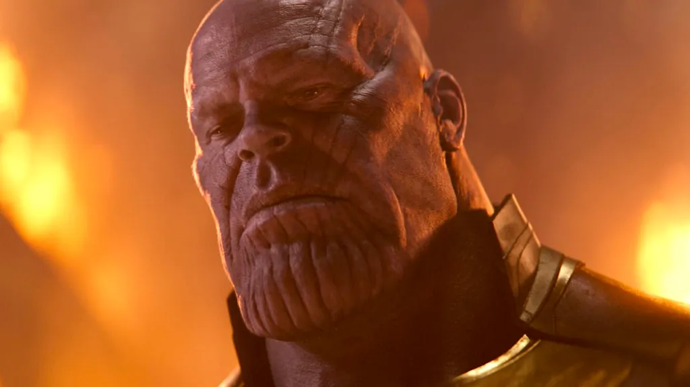
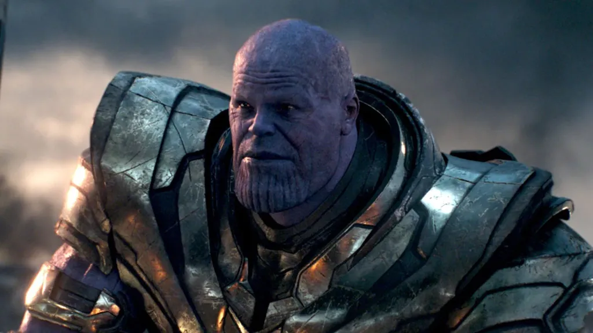

Thanos era um ecologista radical ou só um vilão com um bom discurso?

Se você assistiu a Vingadores: Guerra Infinita e Ultimato, com certeza ficou se perguntando: será que Thanos estava mesmo tentando salvar o universo? Ele parecia tão confiante de que o que fazia era certo. Mas será que isso faz dele um herói incompreendido? Um ambientalista hardcore? Ou só um vilão racionalizando sua obsessão por controle e destruição? Vamos bater um papo sobre isso e explorar se Thanos tinha realmente boas intenções ou se tudo não passava de uma desculpa bonita pra fazer o que queria.
O argumento do Titã: menos gente, mais recursos
A tese de Thanos era bem direta (e cruel): o universo estava superlotado, e os recursos eram limitados. Sua solução? Eliminar metade de toda a vida com um estalar de dedos. Simples assim. Ele acreditava que, ao fazer isso, os planetas sobreviveriam. As pessoas teriam comida, água e espaço para prosperar. Em Guerra Infinita, ele até conta que seu plano funcionou em seu planeta natal, Titã (ainda que isso esteja meio nebuloso no filme). Mas vamos pensar um pouco: isso soa familiar? Quem já leu algo sobre crises ambientais, mudanças climáticas ou até mesmo superpopulação vai reconhecer um certo eco (com trocadilho!) nessas ideias.
Thanos e o discurso ecológico: uma distorção preocupante
Sim, de certa forma, Thanos usa um discurso que, por fora, parece se alinhar com preocupações ambientais. Algo do tipo:
- Recursos naturais estão acabando
- O crescimento populacional causa desequilíbrios
- Precisamos agir de forma radical antes que seja tarde
Só que ele faz tudo isso da maneira mais extrema e antiética possível. Se você já teve aula de filosofia ou ecologia, já deve ter ouvido o termo "malthusianismo". Thomas Malthus, lá no século XVIII, já falava que a população crescia mais rápido que os recursos. Mas até ele, que tinha previsões negativas, nunca propôs apagar pessoas da existência. O que Thanos faz é levar essa ideia ao extremo, de forma autoritária e sem diálogo com o resto do universo.
+ Leia mais:: E se o Thanos tivesse desejado energia infinita em vez de apagar metade do universo?
Ele realmente queria salvar alguém?

É aqui que a gente começa a duvidar das “boas intenções” do nosso vilão roxo gigante. Imagine o seguinte: você quer acabar com a fome no planeta. A opção A é trabalhar para melhorar a produção e distribuição de alimentos, investir em sustentabilidade, educação, reduzir desperdício… Já a opção B é eliminar metade da população. Qual você escolheria? Thanos foi direto na opção B. E nem parou pra pensar em alternativas. Ou seja: não era sobre salvar o universo. Era sobre fazer do jeito dele, com base no que ele acreditava como certo, sem considerar outras formas de resolver o problema.
Mas calma aí… e se ele estivesse certo?
Aí entra um ponto delicado. Muitas pessoas, inclusive dentro da ficção, e até na vida real, apoiam visões de mundo radicais quando elas prometem um “fim bom”. A famosa lógica do “os fins justificam os meios”. Por isso, muita gente sai do cinema pensando: “mas se ele tivesse razão?”. Só que no fundo, o argumento de Thanos é furado até na própria lógica interna. Quer ver?
- Se ele tinha o poder da Manopla do Infinito, por que não multiplicou os recursos ao invés de matar pessoas?
- O estalar de dedos escolhia vida aleatoriamente, o que garante que quem ficou era “melhor” para garantir equilíbrio?
- Mesmo cortando a população, a tendência é que ela cresça de novo com o tempo ou seja, seria preciso estalar os dedos pra sempre?
Essas perguntas mostram como o discurso do Thanos não se sustenta. Por mais que ele pareça inteligente, no fim é uma fantasia autoritária disfarçada de propósito nobre.
Anti-herói ou vilão com marketing filosófico?

Ultimamente tem se falado muito sobre anti-heróis personagens que fazem coisas erradas, mas por razões compreensíveis. Walter White, do Breaking Bad, ou até mesmo Loki da Marvel são exemplos disso. Então a gente pode se perguntar: Thanos se encaixa nesse perfil? Na real, não muito. Ele não hesita em matar, não duvida de si mesmo, e não muda com os acontecimentos. Ele é frio, calculista e inflexível. Sua ideia de “bem” não tem empatia, só lógica matemática distorcida. Num mundo real, alguém assim seria assustador. E, convenhamos, um verdadeiro herói ou até mesmo um líder responsável procura soluções humanas e coletivas para os problemas, não genocídio em massa.
Por que achamos essa ideia tão sedutora?
Apesar de tudo, a verdade é que muitos de nós já sentimos aquele aperto no peito vendo o mundo cheio de problemas. Fome, poluição, destruição ambiental… A sensação de impotência faz parecer que só com medidas drásticas algo vai mudar. É aí que um personagem como Thanos ganha força narrativa. Ele personifica essa frustração coletiva mas dá a ela um caminho sombrio. Pensar no Thanos como um “visionário mal compreendido” tira da gente a responsabilidade de pensar em mudanças reais. Afinal, “se o universo inteiro não deu certo, só cortando tudo e recomeçando”. Mas o mundo real não funciona assim. E ainda bem.
O discurso ecológico de Thanos é só fachada
A grande sacada da Marvel foi criar um vilão que nos faz refletir mais do que simplesmente torcer contra. Mas não se engane: Thanos não é um ecologista radical. Ele é só um vilão com um discurso bonito, maquiado com filosofia pra parecer aceitável. Ao final das contas, ele é só mais um exemplo do perigo de ideias radicais travestidas de soluções simples. E isso, sim, é algo muito real mesmo fora dos cinemas. Então, da próxima vez que alguém disser que Thanos “tinha razão”, vale responder com um sorriso e perguntar: será que a gente não pode ser mais criativo do que isso para salvar o nosso mundo?
Compartilha nos comentários o que você acha: Thanos era mesmo “visionário” ou só um vilão com um plano sem coração?
Leia Também
- E se o Thanos tivesse desejado energia infinita em vez de apagar metade do universo?
- Magneto já salvou a humanidade (mais de uma vez)
- Darth Vader poderia ser julgado por crimes de guerra?
- A mitologia por trás dos Cavaleiros do Zodíaco
- O escudo do Capitão América desrespeita as leis da física?
Sharing is caring!